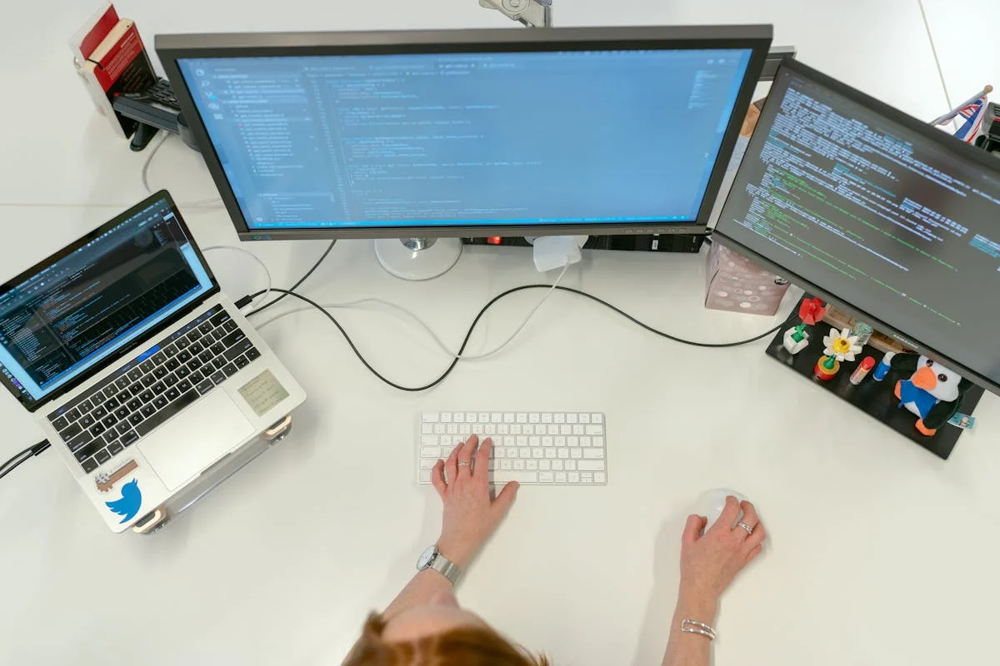

Hola, soy Lisandro Florindo
Desarrollador web enfocado en crear experiencias digitales funcionales y modernas.

Desarrollador web enfocado en crear experiencias digitales funcionales y modernas.

Soy Lisandro Florindo, un apasionado del desarrollo web y la tecnología. Desde que comencé mi camino en la programación, he encontrado en cada proyecto una oportunidad para combinar creatividad, precisión técnica y propósito. Mi objetivo es crear soluciones digitales que no solo funcionen bien, sino que también transmitan identidad y valor.
Me dedico al diseño y desarrollo de sitios web, aplicaciones y sistemas personalizados. A través de herramientas modernas y metodologías ágiles, transformo ideas en productos funcionales que ayudan a empresas y profesionales a mejorar su presencia digital y optimizar sus procesos.
Mi forma de trabajar se basa en la comunicación constante con el cliente, la atención al detalle y la entrega de resultados medibles. Cada proyecto se aborda con planificación, responsabilidad y un fuerte compromiso con la calidad.
Mi objetivo es acompañarte desde la idea inicial hasta el lanzamiento, asegurando que tu proyecto no solo funcione, sino que transmita valor y genere impacto real.
Servicios que ofrezco:
Diseño sitios web atractivos, funcionales y adaptables, con foco en la experiencia del usuario.
Desarrollo aplicaciones web dinámicas, seguras y escalables adaptadas a tus necesidades.

Construyo sistemas personalizados que optimizan tus procesos y mejoran la productividad.
Mantengo y mejoro proyectos existentes para garantizar su rendimiento y seguridad.